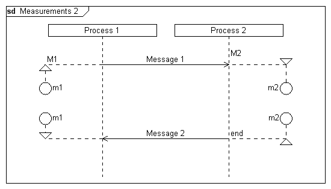

Syntax
Parameters
Syntax
Parameters
 instanceid
gate (optional)
text (optional)
orientation (optional)
instanceid
gate (optional)
text (optional)
orientation (optional)
| Value | Description |
|---|---|
| l | The measurement will be displayed to the left of the lifeline |
| r | The measurement will be displayed to the right of the lifeline |
style (optional)
| Value | Description |
|---|---|
| - | The measurement arrows will be displayed below the horizontal measurement lines. |
| * | The measurement arrows will be displayed above the horizontal measurement lines. |
Example
|
DiagramName: Measurements 2 DiagramStyle: uml PageSize: 550,auto PageMargins: 10,10,10,10 Left: 50 Right: 50 process: p1, "Process 1" process: p2, "Process 2" measurestart: p1, m1, M1 measurebegin: p2, m2, M2, r, * msg: p1, p2, Message 1; ; ; ; msg: p2, p1, Message 2 measurestop: p1, m1 measurestop: p2, m2, end, r, *; |
 |
See also